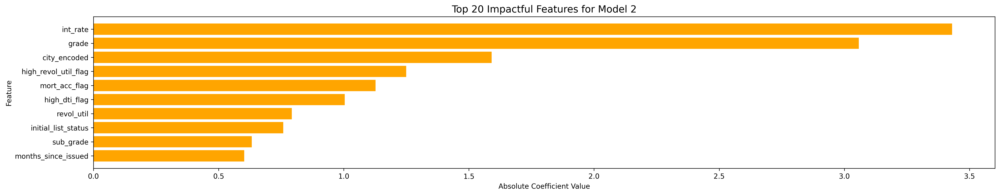
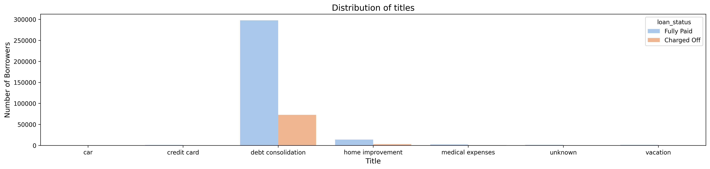
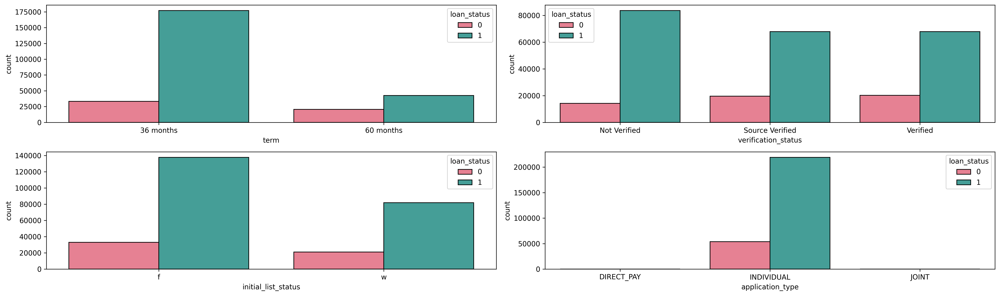
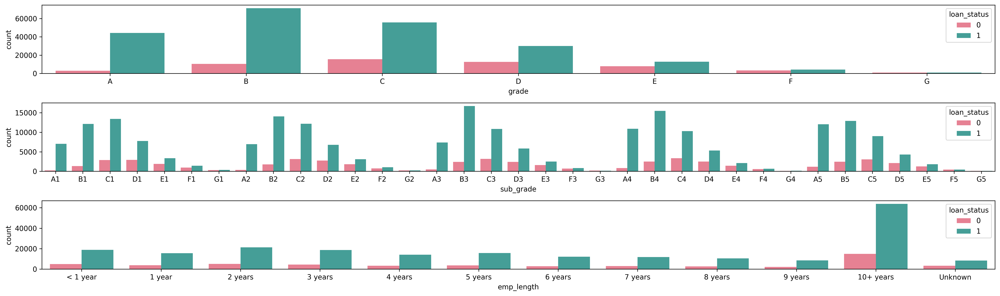

Product Case · Credit Risk Scoring
LoanTap-style consumer lending generates high application volume, but manual credit review is slow and inconsistent.
Academic project (Scaler), Aug–Sep 2024, applied to LoanTap-style consumer lending data.
Analysts need a repeatable way to score new applicants against patterns learned from historical loan outcomes. I trained a logistic-regression risk model on historical loan outcomes, then built a derived dataset that scores every applicant and feeds a working underwriting console — risk score, repayment odds, and tiered recommendation, per applicant, not just a model demo.
Analyst UX prototype ML model dashboard Underwriting console (source)The risk model is a functioning backend trained on ~396,000 historical loans. The Lovable UX above remains a clickable design mock; the underwriting console is a separate Flask app that runs on real model output — a derived dataset scores every applicant offline, and the console reads that, not a live model call.
The core question
Given an applicant's profile — amount, term, rate, grade, income, DTI, credit history, purpose, and more — how likely are they to default? That default probability is translated into operational outputs analysts can act on: a 0–100 risk score, repayment odds, and tiered recommendations such as APPROVE, APPROVE_WITH_CONDITIONS, REVIEW_MANUAL, or REJECT.
An offline-trained logistic regression credit-default model for LoanTap-style applications. Training used ~396k historical loans; live use only scores new applications and does not update the model from API or UI users.
Two things that were broken
High application volume met a review process that was slow and inconsistent from analyst to analyst.
Approve or reject calls weren't tested against what actually happened to past borrowers who looked similar.
What we changed
- Trained on what actually happenedLogistic regression fit on ~396,000 historical loans, learning real repayment and default patterns, not assumptions.
- Turned one score into decisionsThe same default probability reformatted into a risk score, repayment odds, and a four-tier recommendation.
- Made the reasoning visibleLogistic regression coefficients and rule-based risk tags (e.g. high DTI, low income), not a black-box number.
- Closed the loop from model to staff toolBuilt a derived dataset that scores every applicant against the trained model, then feeds a working underwriting console — not a UI mock running on placeholder numbers.
- Validated the tiers against real outcomesBecause the scored applicants are closed historical loans, I could check whether the recommendation tiers actually track repayment — and they do.




One default probability, reshaped into a risk score, repayment odds, and a recommendation.
What it moved
Does the tiering actually work?
The derived dataset scores the full historical portfolio, and because those loans are already closed, the actual outcome is known. Charge-off rate rises monotonically across the four tiers — the check that was missing when the staff tool ran on disconnected mock data.
Business impact
- Faster decisionsStreamlined workflows cut review time, enabling higher application throughput.
- Lower credit lossesBetter risk detection reduces defaults and charge-offs by identifying high-risk patterns in applicant profiles.
- Stronger adoptionAn intuitive interface made the ML technology accessible to non-technical users from day one.
- Consistent risk assessmentStandardized scoring reduces analyst variability and improves portfolio quality.
Key insights from the data
Analysis of the ~396k-record training set showed debt consolidation loans comprise a large share of applications, with interest rate and credit grade among the strongest default predictors. Borrowers with verified income, individual (non-joint) applications, and 36-month terms tended to show better repayment performance — patterns reflected in the engineered feature set.


